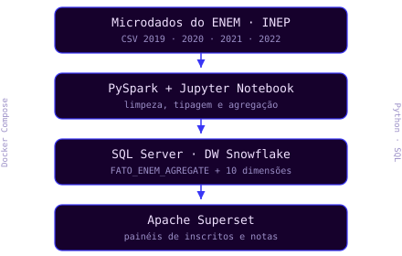

Leonardo Basilio
Engenheiro de Dados Sênior em Fortaleza/CE, com mais de 8 anos construindo pipelines e produtos de dados de ponta a ponta — da ingestão e transformação à modelagem, entrega em BI e sustentação em produção.
Meu foco atual é data streaming e arquiteturas event-driven com Apache Kafka: Change Data Capture (CDC) com Debezium, publicação de eventos em tópicos Kafka e replicação entre bancos com Kafka Connect. Modernizei um monolito SQL Server para uma arquitetura orientada a eventos (CDC → Debezium → Kafka → Kafka Connect), desacoplando ambientes de produção, viabilizando microsserviços e alcançando ganhos de 80–90% de performance nas aplicações.
Também atuo com engenharia de dados em batch e cloud no Azure (Data Factory, Synapse Analytics, Databricks, Delta Lake e arquitetura Medallion). Na Bem Promotora, migrei cargas legadas de DW/SSIS para um Lakehouse Medallion, reduzindo o tempo de processamento em ~70% e o custo diário em ~53%.
Stack principal: SQL, Python, PySpark, Apache Kafka, Debezium, Kafka Connect, Databricks, Delta Lake, Azure Synapse e Amazon S3 — complementada por entrega de BI em Power BI, Tableau e Apache Superset. Desenho modelos dimensionais, data marts e camadas semânticas com forte foco em qualidade, linhagem e governança de dados, atuando como referência técnica e mentor do time.
</>

Ambiente CDC
Aplicação de um Ambiente CDC (Change Data Capture) utilizando Debezium, Kafka, Kafka UI, Spark, Zookeeper e SQL.

ENEM
Data Warehouse snowflake dos microdados do ENEM: PySpark, SQL Server e painéis no Apache Superset.

Integração Kafka + Amazon S3
Pipeline de ingestão em tempo real: PostgreSQL → Kafka Connect → Apache Kafka → ksqlDB → Amazon S3.
Integração Apache Kafka + Amazon S3
Laboratório completo de ingestão de dados em tempo quase real: os registros nascem no PostgreSQL, são capturados pelo JDBC Source Connector do Kafka Connect, publicados em tópicos do Apache Kafka, transformados em streams pelo ksqlDB e entregues a um data lake no Amazon S3 pelo S3 Sink Connector — todo o ambiente orquestrado com Docker Compose.
Fluxo da solução
Arquitetura do ambiente
No ksqlDB os eventos ganham vida: um stream é criado sobre o tópico de clientes, filtros derivam novos fluxos em tempo real (como o tópico de jovens), os registros são classificados por faixa etária e uma tabela agregada mantém a contagem por categoria — todos esses tópicos também são persistidos no S3 em JSON e Avro, com schemas versionados no Schema Registry.
O repositório documenta o caminho inteiro: criação do usuário IAM e da access key na AWS, configuração da AWS CLI e do bucket, imagem customizada do Kafka Connect com os conectores, docker-compose de todos os serviços (Zookeeper, broker, Schema Registry, Connect, ksqlDB, REST Proxy e PostgreSQL), geração de dados sintéticos, registro dos conectores via API REST, validação ponta a ponta e os pontos de atenção para levar essa arquitetura a produção.
Tecnologias
- Apache Kafka
- Kafka Connect
- ksqlDB
- PostgreSQL
- Amazon S3
- Schema Registry
- Avro
- Docker Compose
- Python
- AWS IAM
- AWS CLI
{xp}
Iniciei minha vida profissional estagiando com dados em uma empresa de recuperação de crédito, estou na área há mais de 8 anos.
Sou apaixonado por essa área, sempre buscando aprender sobre novas tecnologias e desenvolver projetos de código aberto para contribuir com a comunidade.
-
Bem Promotora 02/2022 até o momento
Engenheiro de dados sênior. Arquiteturas event-driven com CDC, Debezium, Apache Kafka e Kafka Connect; Lakehouse Medallion em Azure Synapse, Data Factory e PySpark; entrega de BI em Power BI e Apache Superset.
-
Lider Assessoria 02/2021 a 02/2022
Especialista em dados. Atuação com Power BI, Alteryx, Tableau e SQL
-
CRC - Central de Recuperação de Créditos 09/2017 a 02/2021
Analista de Dados. Atuação com Tableau, Alteryx, Pentaho e SQL
.edu
Graduação
Ciência de Dados
ESTÁCIO-MG
Concluído Jan/2024
Ciência da Computação
IFCE
Em andamento
Técnico em Informática
IFCE
Concluído Jun/17
Pós-graduação
Engenharia e Arquitetura de Dados com IA
XP Educação
Concluído
MBA em Business Intelligence
Concluído
Tecnologias
- Azure Synapse
- Databricks
- Amazon S3
- AWS
- Apache Kafka
- Kafka Connect
- ksqlDB
- Debezium
- Spark
- Scala
- SQL Server
- PowerBI
- Apache Superset
- Tableau
- Alteryx
- DBT
- DeltaLake
- Azure Data Factory
- Apache Flink
- PostgreSQL
- Python
- Docker
- Kubernetes
- Terraform
-
Bootcamp Data Science Aplicada
Alura
Desenvolvimento de um estudo aplicado de análise de dados com Python, Pandas e Matplotlib.
-
Imersão Azure Data Factory
Microsoft
Treinamento especializado para a arquitetura de nuvem da Microsoft, com foco no Data Factory.
-
Certificações
- Microsoft DP-900 — Azure Data Fundamentals
- Microsoft DP-600 — Fabric Analytics Engineer
- Duke University — Spark, Hadoop and Snowflake for Data Engineering
-
Idiomas
Português (nativo) · Inglês (avançado) · Espanhol (básico)